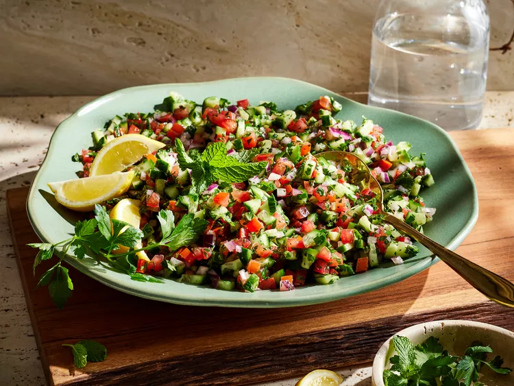

Back To Home
Shirazi Salad

Description
Shirazi salad is known for its fine, uniform dice. The closer you can get to 1/4-inch dice on the veggies the better. Look for ab ghooreh (sour grape juice) at Middle Eastern markets.
Ingredients
- 1 pound plum tomatoes, finely diced
- 1 pound Persian cucumbers, finely diced
- 1 small red onion, finely diced
- 1 cup minced fresh parsley
- 2 tablespoons minced fresh mint
- 5 tablespoons ab ghooreh (or lemon juice plus 4 teaspoon zest), plus more to taste
- 1/4 cup olive oil
- 3/4 teaspoon salt, plus more to taste
- 1/2 teaspoon freshly ground black pepper, plus more to taste
- lemon wedges, for serving
Steps
- Stir together tomatoes, cucumbers, red onion, parsley, mint, ab ghooreh, oil, salt, and pepper in a large serving bowl.
- Season to taste. Garnish with parsley and serve immediately with lemon wedges.